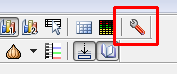
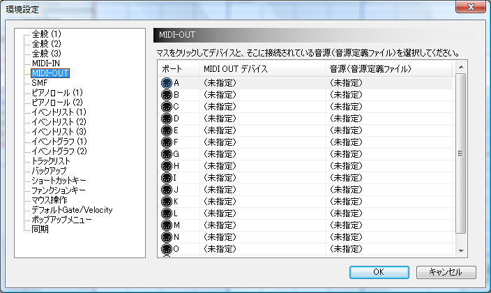
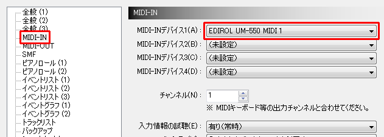

ツールバーの[環境設定]ボタンをクリックし、[環境設定]画面を開いてください。

左のMIDI-OUTをクリックすると、現在の出力ポート設定画面が表示されます。

とりあえず、AポートのMIDIデバイス部分をクリックし、使用したいMIDIデバイスを選んでください。

次に、Aポートの使用音源部分をクリックし、先ほど選んだMIDIデバイスに接続されている音源（音源定義ファイル）を選んでください。

外部音源を持っておらず、何を設定して良いのか全く解らない人は、AポートのMIDI OUT デバイスに「Microsoft GS Wavetable SW Synth」を、音源（音源定義ファイル）に「GSm
（Microsoft GS Wavetable SW Synth）」をそれぞれ指定してください。
（Bポート以降はそのままにしてください。）
勘違いされやすいのですが、Dominoに「SC-8850」や「GM Level1」という音源が付属しているわけではありません。
例えば「SC-8850」という製品をお持ちの方が、音源欄に「SC-8850」を指定することで、DominoからSC-8850独自の音色や機能を利用できるようになります。
※ 「SC-8850」はローランド社から発売されたハードウェア音源です。
製品情報：http://www.roland.co.jp/products/dtm/SC-8850.html
例えば「SC-8850」という製品をお持ちの方が、音源欄に「SC-8850」を指定することで、DominoからSC-8850独自の音色や機能を利用できるようになります。
※ 「SC-8850」はローランド社から発売されたハードウェア音源です。
製品情報：http://www.roland.co.jp/products/dtm/SC-8850.html
なお、ここに使用している音源が存在しない場合は、
- 公式サイトの音源定義ファイルリンク集から音源定義ファイルを探す
- 自作する（「音源定義ファイルの仕様」を参考にしてください）
「・・・音源の定義ファイルを作ってください」という感じで要望を出す
（音源の持ち主でないと音源定義ファイルは作れませんので、やはり自作して頂くのが一番かと思います。）
もし、１６チャンネルを超えるチャンネル数を使いたい場合、または複数の音源を同時に使いたい場合には、 Bポート以降を同様に設定してください。
あとは、もしMIDIキーボードをお持ちの場合は、左の「MIDI-IN」を選び、そのMIDIキーボードのMIDI-INデバイスを設定してください。

これで準備は完了です。